Visual Studio Code telepítése
A OnePage - TwoDays fejlesztés során a Visual Studió Code szerkesztő programot fogjuk használni. A telepítéshez és a beállításhoz az alábbi lépések adnak segítséget.
A Visual Studio Code telepítés lépései
-
1. lépés
A Visual Studio Code itt érhető el és innen tölthető le. Az alábbi ábra segít a letöltésben.
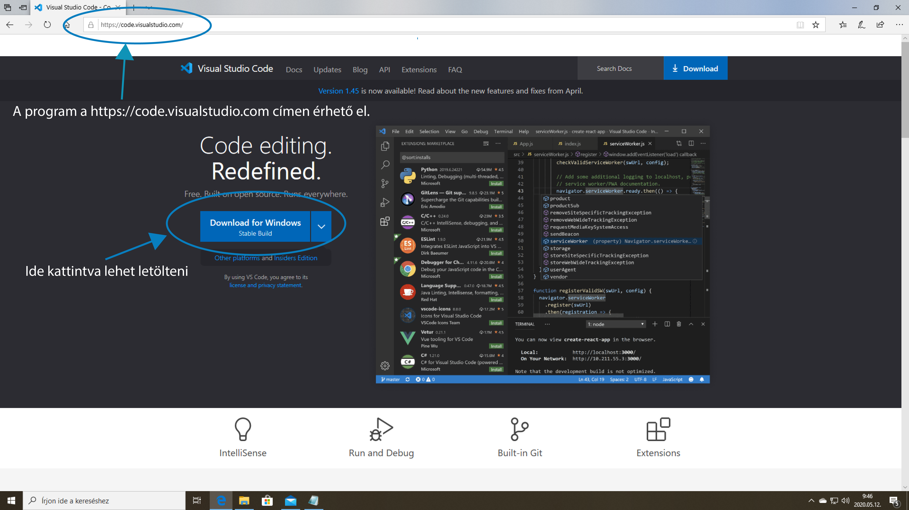 -
2.lépés
A letöltés után telepítsd a
VSCodeUserSetup-x64-1.45.0.exefájlt. A fálj neve más és más lehet a használt Windows miatt és a letöltés időpontja miatt. A VSC havonta ad ki új változatot. A telepítés során az alábbi beállításokat végezd el: 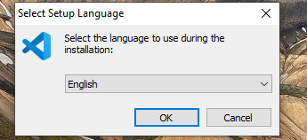A telepítés helye minden gépen más és más lehet. 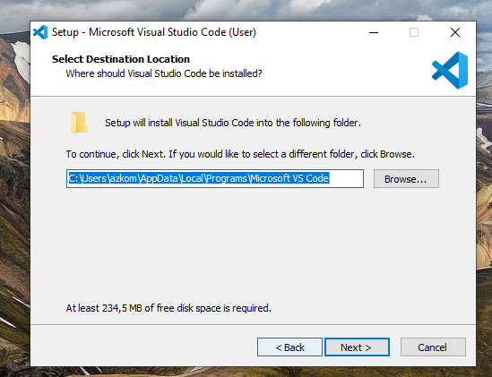
A későbbi hatékony működés érdekében az opciók közül fontos az ábrán lévők kiválasztása. (Gyakorlatilag az összes opció kiválasztása) 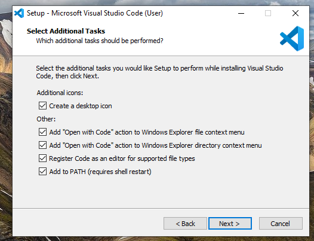
- 3.lépés
Telepítés után a VSC programot elindítva az alábbi nyitóoldal jelenik meg. (Az aktuális változat ettől eltérhet, más lehet, a jelenlegi(2020. április) az 1.45-ös verzió.) 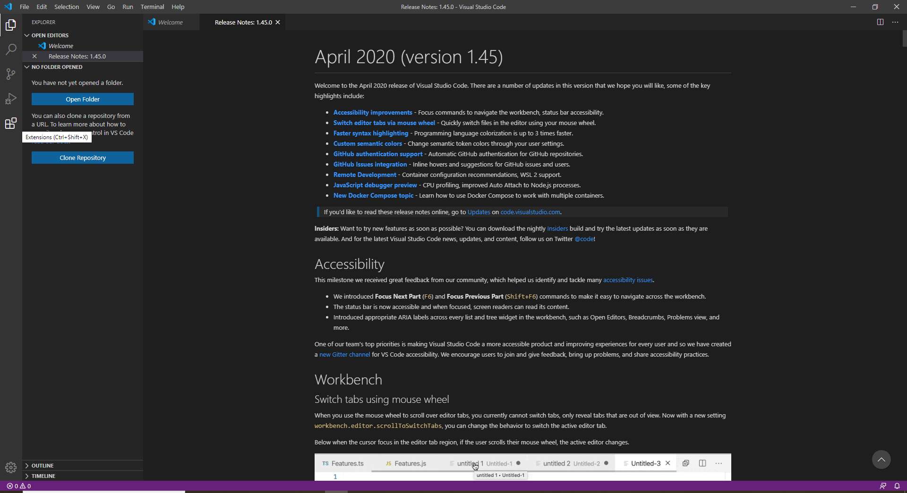
- 4.lépés
A hatékony működés érdekében telepítsd a következő kiegészítőket. A kiegészítő menüt a
Ctrl+Shift+Xmegnyomásával hívhatod elő. A szövegablakba írd be a kiegészítő nevét-> válaszd ki a listából -> azinstallgomb segítéségével telepítsd. Néhány kiegészítő újraindítást kér.Az alábbi kiegészítőket telepítsed:Bracket Pair Colorizer 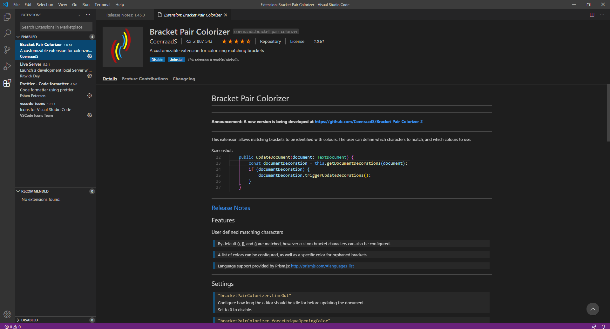
Live Server 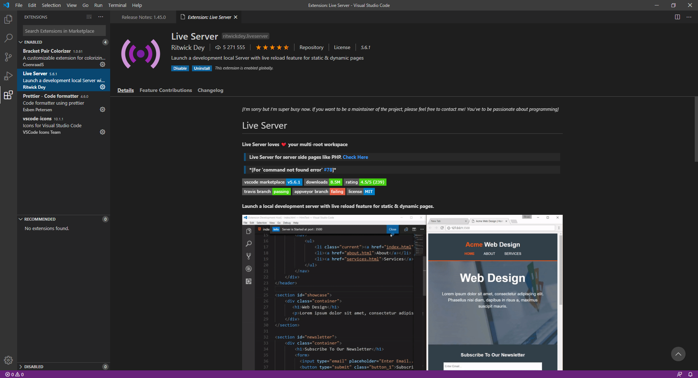
Prettier-Code-formatter 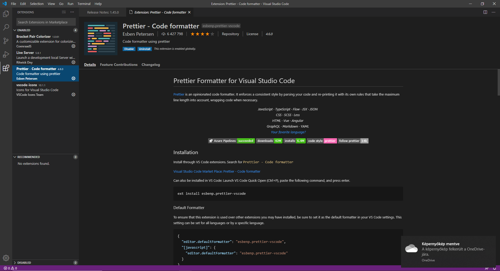
vscode-icons 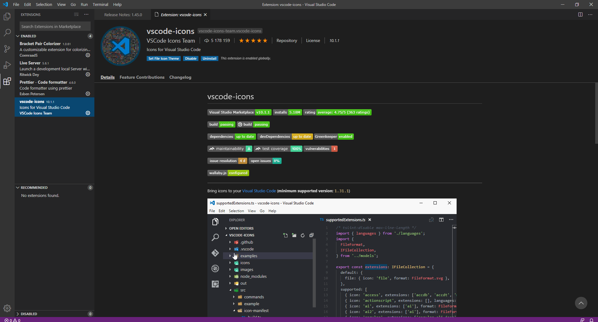
Hungarian Language Pack for Visual Studio Code 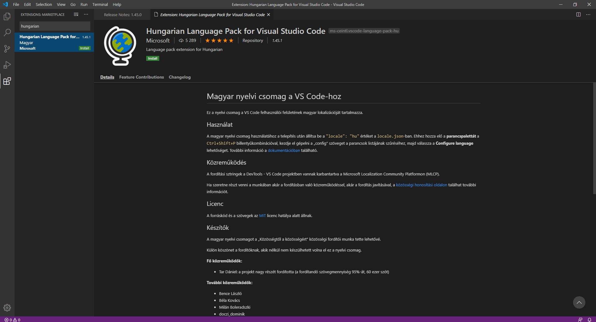
- 5.lépés
A magyar nyelvi csomag beállítása az alábbi lépésekkel teheted meg: Nyomd meg a
Ctrl+Shift+Pbillentyűkombinációt!A képernyőn megjelenik egy szövegsor. Ide írd be a
languageszót, és válaszd ki aConfigure Display Languagelehetőséget! 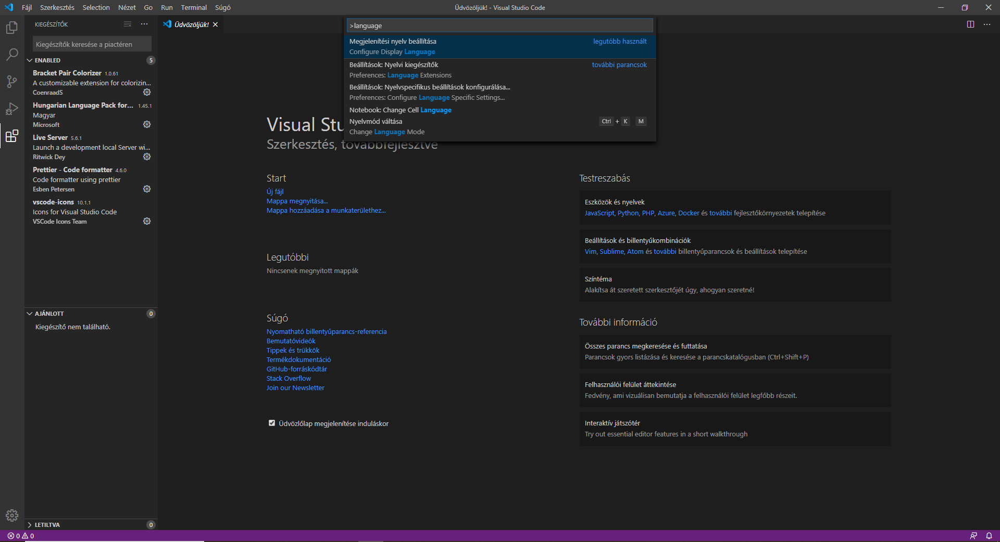Az új ablakban válaszd ki a
hulehetőséget! 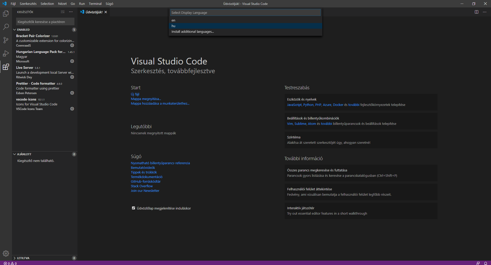 - 6.lépés
A VSCode ikonok beállítását az alábbi lépésekkel teheted meg: Nyomd meg a
Ctrl+Shift+Pbillentyűkombinációt!A képernyőn megjelenik egy szövegsor. Ide írd be a
iconsszót, és válaszd ki aActivate VSCode iconslehetőséget!
A Visual Studio Code kész a használatra. A fejlesztés során innen folytatjuk.